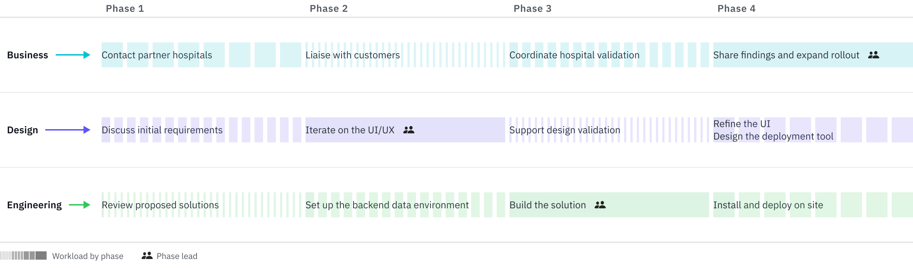
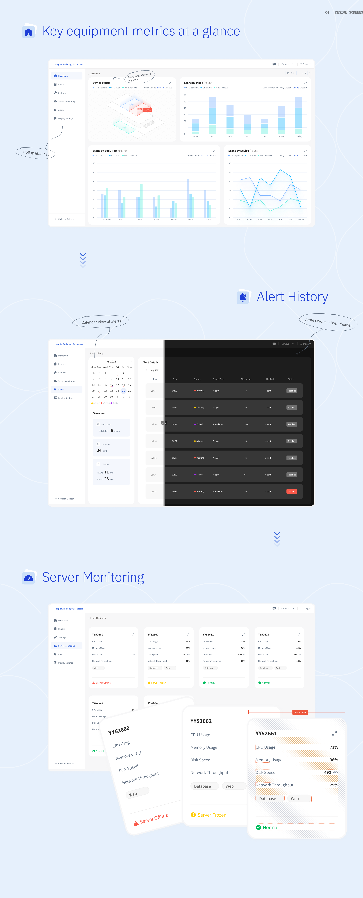

01
Policy encourages digital hospital management
In March 2021, China’s National Health Commission issued trial standards for evaluating hospital smart management. The standards defined assessment categories and requirements for the first time.
COMPLEX B2B · HEALTHCARE UX · DATA-INTENSIVE PRODUCTS
A hospital radiology department generates large volumes of data throughout the day. This project makes that data easier to interpret so department leaders can see how operations are running, make informed decisions, and improve efficiency.
The main design challenge was understanding the radiology director’s many responsibilities. With help from the sales team, I identified where a digital tool could improve the workflow. On-site validation let us test the design quickly and determine what to refine next.

01
In March 2021, China’s National Health Commission issued trial standards for evaluating hospital smart management. The standards defined assessment categories and requirements for the first time.
02
Director’s responsibilities = Staff management + Equipment management + Clinical safety + Teaching and research + …
The business, design, and engineering teams had different priorities and workloads in each phase.


Validated the design with directors from equipment services, IT, and radiology department.
![Site validation record and hospital site photos site-validation.record const siteValidation = { condition: "Radiology equipment performance ↑", expected: { change: "Workflow efficiency ↑", outcome: "Department operations ↑", }, potential: { change: "Radiation dose ↓", outcome: "Staff safety ↑", }, additional: ["Radiology quality control", "Performance evaluation"], };](../assets/img/equipment-original/validation-en.webp)
The project grew from two hospital pilots to installations at 10+ hospitals, then into a platform that supported both on-site needs and the business strategy.
![From hospital pilots to a platform We turned the steps site engineers followed during pilots and deployment into an installation tool. Pilot at 2 Hospitals Key metrics at a glance · Large-screen display · Real-time data · Preset report downloads · Basic alerts ↓ Deployment at 10+ Hospitals Dashboard · Data queries · Report maintenance · Large-screen display · Server monitoring · Alerts ↓ Platform Tool Cross-system data integration · Report creation and maintenance · Queries, visualization, and analysis Production Screenshot (Chinese UI)](../assets/img/equipment-original/rollout-en.webp)